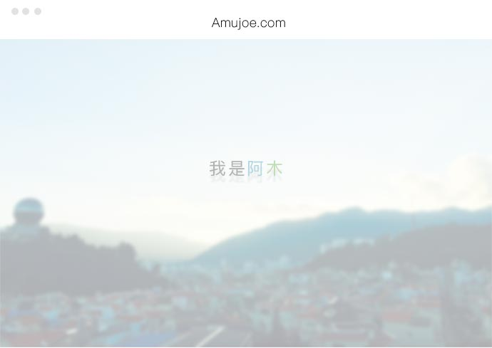
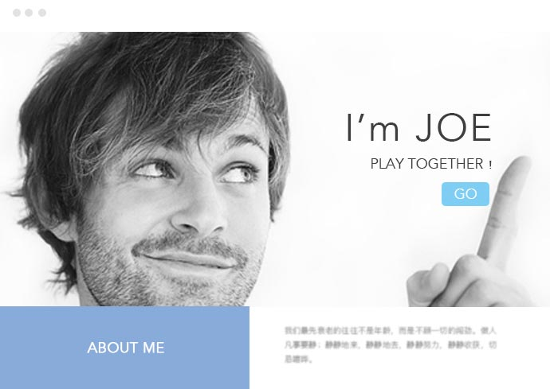
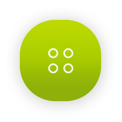
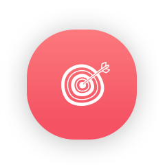
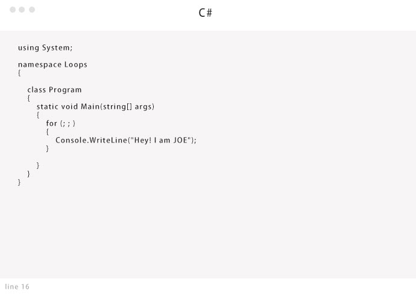

我学了设计，但又不做设计
与其说设计让我爱上了绘画，不如说爱上了绘画，才开始的设计；设计对我来说，它游走在身边、埋藏于心间，却消失在工作中。我只做我自己的设计师...
/设计
一切的开始都源于喜欢
放弃拥有的成就，需要的是勇气。追寻内心的感觉，需要的是动力。而接触到你的那一刻，是那么地执着，那么的坚定，即使被别人不看好，即使自己有时自己也会怀疑...
/喜欢


会前端和会前端不是个概念
中国的文字博大精深，会就是会，会又不一定就真会！同时也不得不感叹前端技术发展真是神速，那几乎不是继承式的迭代，而是一次又一次的变革，一次又一次的创造...
/前端
- 走一走
- 看一看
- 来过路过
- 不要错过
对技术的热爱和追求，永无止境
这是一种态度，保持一颗匠心，不断的追求更高的技能，并执着于做出更优秀的产品！试想当一个很好的创意出现时，你可以一个人去实现并完善它，这是一件多么令人兴奋的事啊！
/程序
